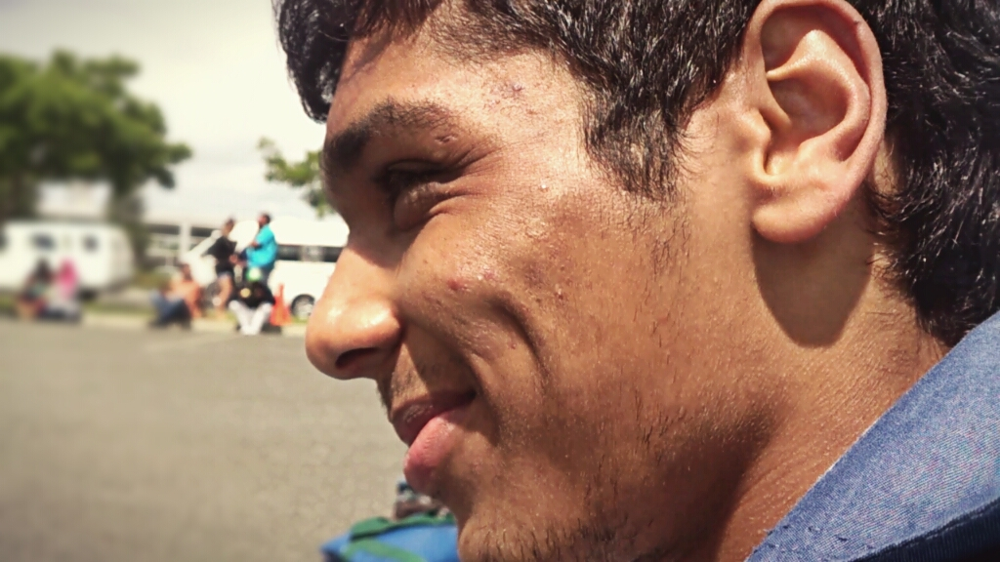

The Team
This is the team who contributed to the success of Defeasible Datalog:
Joshua Abraham 
Chief Implementor
Joshua joined computer science on a split second decision and hasn't regretted it since. He completed his Undergrad in Physics (which was his first choice) and Computer Science at the University of the Western Cape. He then took a gap year to pursue personal interests and better himself as a human being, by relocating from city to farm life. Afterwhich he heard the city calling him back to complete an Honours in Computer Science at the University of Cape Town.
Thomas Pownall
Chief Technical Analyser
Thomas knew computer science was the field for him since high school. It has enabled him to probelm solve and create cool projects. He completed a Bachelor of Science at the University of Cape Town majoring in Mathematics and Computer Science. He is now completing his Honours in Computer Science at the University of Cape Town. His future endeavours are mostly unknown, however, he aims to follow his passions and make an impact in the world.
Professor Thomas Meyer 
Supervisor
Prof. T. Meyer is a full professor in the Department of Computer Science at the University of Cape Town.
He is also the head of the national Centre for Artificial Intelligence Research (CAIR) and is an NRF B-rated (Internationally Acclaimed) researcher.
Before joining the University of Cape Town he was Director of the UKZN/CSIR Meraka Centre for Artificial Intelligence Research (CAIR), Chief Researcher at the CSIR Meraka Institute, Honorary Professor in the School of Mathematics, Statistics, and Computer Science at the University of KwaZulu-Natal, and Research Group Leader of the Knowledge Representation and Reasoning group (KRR). Professor Meyer received his PhD in Computer Science from the University of South Africa in 1999.
Michael Swan 
Co-supervisor
Michael completed his Bachelor of Business Science (with a specialisation in Computer Science) degree at the University of Cape Town. He is currently (as of 2018) pursuing a Masters in Computer Science at the same university. He enjoys implementing systems and solving troublesome problems. His research specialisation lies in the field of Knowledge Representation and Reasoning. He has the best interest of his peers at heart and is passionate about ensuring the best envrionment for Computer Science development.